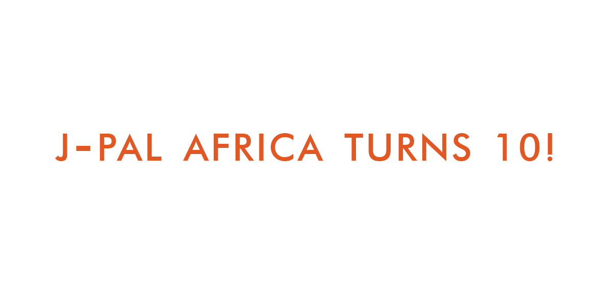

Timeline
Milestones and highlights from J-PAL Africa's first decade
In August 2010, J-PAL established its Africa office within the Southern Africa Labour and Research Unit (SALDRU) at the University of Cape Town’s (UCT) School of Economics. Click on the titles below to learn more about J-PAL Africa’s history.
2011
-
J-PAL Africa hosts a launch conference and the Minister in the Presidency, Trevor Manuel opens the event. Over 120 researchers, policymakers and development practitioners from across the continent attend to discuss the value of assessing social programmes and the practical applications of randomised evaluations.
-
J-PAL Africa hosts a joint conference with the South African National Planning Commission to discuss global evidence on increasing youth employment and to identify priority research questions for South Africa. J-PAL Africa and the NPC jointly launch the “Collaborative Analysis of Labour Intervention Effectiveness” (CALIE) Project, to understand the effectiveness of existing Labour Market interventions. Through CALIE, J-PAL Africa commits to supporting local researchers either by facilitating collaborations with J-PAL affiliated researchers or by providing training and technical assistance to local researchers to run independent evaluations as part of the initiative. EVIDENCE GENERATION
-

J-PAL Africa’s first Evaluating Social Programmes (ESP) event is held in Cape Town, with over 80 participants from across Africa. J-PAL’s flagship ESP course aims to upskill public sector actors from across the continent, focusing on experimental methodologies and how to use evidence from randomised evaluations in policy design. EVIDENCE USE
-
J-PAL Africa supports researchers Shawn Cole, Bilal Zia, Martin Abel, Lucas Crowley, Christian Salas Pauliac and Veronica Postal to conduct a randomised evaluation of a financial literacy programme in South Africa, in collaboration with Old Mutual, the Russia Financial Literacy and Education Fund as well as the Women’s Development Business.EVIDENCE GENERATION
2012
-

J-PAL Africa co-hosts Evidenced-Based Education: Policy-Making and Reform in Africa with Innovations for Poverty Action (IPA) and the Ghana Education Service (GES) in Ghana. The event is followed by consultations with heads of education departments in Ghana, Kenya and South Africa as well as related NGOs, on piloting and scaling evidence-based interventions, as well as the related challenges. EVIDENCE USE
2013
-
J-PAL Africa hosts a successful matchmaking conference for the J-PAL Urban Service Initiative (USI), bringing together 14 researchers and 12 practitioners from different organisations. The objective is to stimulate discussion on innovations to improve access to water, sanitation, and hygiene services for the urban poor and opportunities for collaboration between researchers and practitioners. EVIDENCE GENERATION
-
The Rwandan Government and J-PAL Africa co-host the Decision Science Symposium in Kigali. Over 80 government officials participate in an evidence sharing event relevant to the government's priorities in health, education and agriculture. Encouraged by the event, the Rwanda Agricultural Board, with J-PAL Africa support, launches the Water Tanks Loan Programme based on evidence from a randomised evaluation in Kenya. EVIDENCE USE
2014
-
J-PAL Africa launches the Project Incubation Fund to support South African researchers in carrying out exploratory policy-relevant research in South Africa. The first round of funding awards grants to studies looking at maternal and child health, WASH interventions, prepaid electricity meters, and young voter motivation. EVIDENCE GENERATION
-
In partnership with IPA, J-PAL Africa hosts a two-day evidence workshop with government officials in Malawi to share evidence across Health, Education, Agriculture and Finance, while also building an understanding of the method and value of randomised evaluations. EVIDENCE USE
2015
-

Photo: Shutterstock J-PAL Africa collaborates with City of Cape Town to study the impact of prepaid electricity meters on electricity use and utility revenue. The results inform local policy on utility payment systems. EVIDENCE GENERATION
-
In the leadup to elections, J-PAL Africa co-hosts a conference with IPA and FCDO, as part of J-PAL’s Governance Initiative, focusing on emerging evidence from randomised evaluations on how to improve voter knowledge and participation in the electoral process. The event draws a diverse range of stakeholders from within Ghana and across the West African region. EVIDENCE USE
2016
-

Photo: Harambee J-PAL Africa supports the implementation of three key studies to inform Labour Markets policy in South Africa: 1. J-PAL affiliated professors Patrizio Piraino, Martin Abel, and Rulof Burger partner with the South African Department of Employment and Labour (DEL) to evaluate the impact of reference letters on employer response rates and employment outcomes for young people; 2. Piraino, Abel, Burger, and Eliana Carranza, in collaboration with the World Bank and DEL, study the impact of a job search planning intervention on job search efficiency and employment among youth; 3. Eliana Carranza, Robert Garlick, Kate Orkin, and Neil Rankin partner with Harambee Youth Employment Accelerator to evaluate the impact of providing information about jobseekers’ skills on employment. EVIDENCE GENERATION
-

J-PAL Africa helps policymakers in Zambia adapt the TaRL programme from India to the local context helping craft a framework we now refer to as the generalisability framework. After several discussions with J-PAL Africa on how to boost foundational skills, the Ministry of General Education in Zambia launches adapted evidence-based Teaching at the Right Level (TaRL) pilot, Catch Up, in 80 schools in collaboration with the Global Partnership for Education, UNICEF, J-PAL’s Government Partnership Initiative (GPI), DfID, the British Council, IPA Zambia, and VVOB – education for development. EVIDENCE USE
2017
-
J-PAL Africa launches another funding round to finance pilots of policy-relevant randomised evaluations by South African based researchers. The Scientific Directors support local researchers in designing study questions as does the local research team, which supports research management, ground support, and capacity building. EVIDENCE GENERATION
-
The Ministry of Health, with support from the World Food Programme, J-PAL Africa, IPA Sierra Leone, and Frontier Research launch a pilot intervention providing incentives for childhood immunization. EVIDENCE USE
2018
-
Conversations between J-PAL Africa and education leaders in different countries highlight the need to strengthen foundational skills across the continent. In collaboration with Pratham, J-PAL Africa starts working with selected governments and their partners to adapt and pilot TaRL programmes, including the government of Borno State in Nigeria with their implementing partners, Plan International, UNICEF and FCDO. At the same time, J-PAL supports the Ministry of National Education in Cote d’Ivoire to launch a TaRL pilot called le Programme d'Enseignement Ciblé (PEC) in collaboration with Transforming Education in Cocoa Communities (TRECC) and IPA. It constitutes the first TaRL programme ever implemented in French. EVIDENCE USE
2019
-
Photo: Young 1ove J-PAL and Pratham create a joint venture, TaRL Africa, to support partners working to address the learning crisis in primary schools in Africa through the evidence-based TaRL approach, with support from Co-Impact. EVIDENCE USE
-
Photo: Intersect J-PAL Africa launches its first research initiative - the Digital Identification and Finance Research Initiative (DigiFI) in Africa, to provide funding for the study of digital IDs and payment systems in Africa and their impact on citizens and governments. Eight research projects are funded in the first round of the Request for Proposals (RFP). EVIDENCE GENERATION
-
The policy team holds trainings with career counsellors in the Western Cape and Gauteng, as well as with NGOs, on the evidence-based action plan and reference letter interventions. EVIDENCE USE
2020
-
Photo: Intersect DigiFI Africa expands its policy work and staff, and runs its second Request for Proposals through which it funds nine new projects, including two pilot projects led by African scholars. The COVID-19 pandemic hits, catalyzing a worldwide increase in digital solutions, particularly digital social protection measures. In response, DigiFI Africa begins accepting off-cycle proposals to help policymakers rapidly respond to the on-going crisis. DigiFI funds two new projects to help tackle COVID-19 on the continent. DigiFI is also honoured to be a pillar of the G7 partnership of women's digital financial inclusion to help address gender inequality in the financial sector on the continent. EVIDENCE GENERATION
-
Zambia’s TaRL programme, Catch Up, expands to all 1,788 schools in Southern and Eastern provinces with support from VVOB-education for development, TaRL Africa, UNICEF and USAID. With additional support from the LEGO Foundation, Catch Up scales into Lusaka Province in the second half of 2020, getting 216 schools in four districts ready to begin implementing Catch Up in January 2021. EVIDENCE USE
-
As part of J-PAL’s IDEA initiative, Kelsey Jack, Hugh Cole, Brendan Maughan-Brown, and Derek Strong co-wrote a chapter in the Handbook on Using Administrative Data for Research and Evidence, which highlights J-PAL Africa’s partnership with City of Cape Town, as well as the role of academics in accessing and using administrative data to inform decision making for key policy challenges. EVIDENCE GENERATION
2021
-

Sign up for our newsletter to stay up to date: j-p.al/news